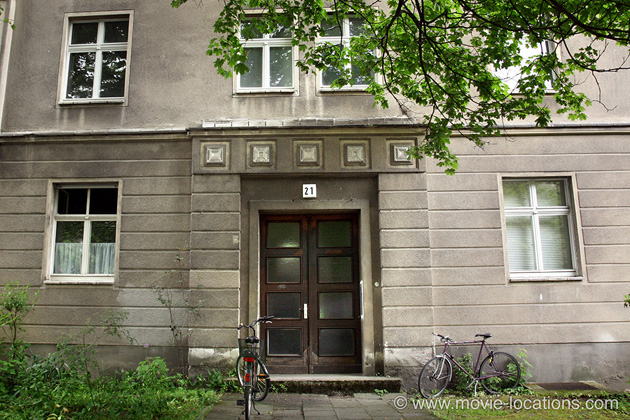
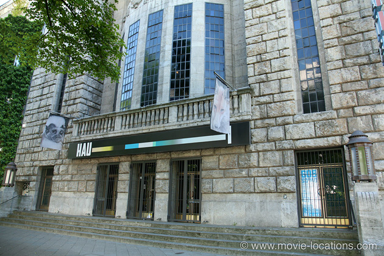
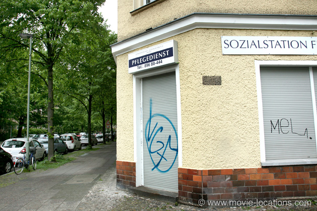
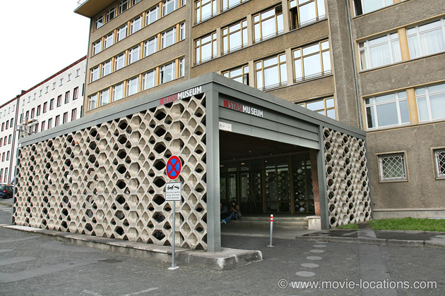
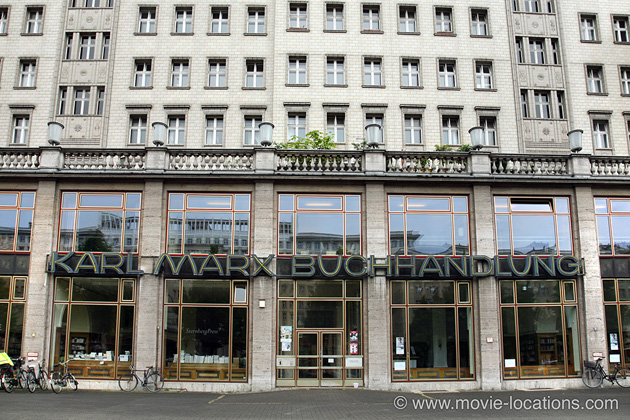

Das Leben Der Anderen (The Lives Of Others)
Main Content

The 2007 Oscar winner for Best Foreign Language film is set in 1980s East Berlin, where celebrity playwright Georg Dreyman (Sebastian Koch) and his equally celebrated actress companion Christa-Maria Sieland (Martina Gedeck), become targets for clandestine observation by the state when the powerful Minister for Culture, Hempf (Thomas Thieme), develops a crush on the performer.
The conscientious Wiesler (Ulrich Mühe), an agent for the notorious Stasi secret police, is installed in the attic of the couple’s apartment block to monitor their private conversations, naively believing he’s protecting the GDR from enemies. As a witness to the most intimate moments of the couple, he gradually becomes aware of a new world of humanity.
The film opens in the notorious Berlin-Hohenschonhausen prison, where Wiesler is demonstrating his interrogation techniques. Although the film uses as many real-life locations as is practical, this is not one of them.
The director of Hohenschönhausen Prison, which is now the site of a memorial dedicated to the victims of Stasi oppression, refused to give director von Donnersmarck permission to film. He objected to a Stasi man being presented as a hero, and when von Donnersmarck responded by citing Steven Spielberg’s Schindler's List as an example of a similar plot device, the director countered with "That is exactly the difference. There was a Schindler. There was no Wiesler.”

The wood-panelled theatre (presumably intended to be the similar but larger Volksbühne) in which the Head of Culture reveals his doubts about Dreyman to Minister Hempf is actually the Hebbel Theatre, Stresemannstraße 29.
The 800-seat Hebbel was built in 1908 in the Jugendstil (art nouveau style), an early work by the well-known theater architect Oskar Kaufmann. It was the only theater in Berlin left relatively unscathed after WWII and actually reopened in August 1945. Along with two other theatres, it’s now part of Hebbel am Ufer (HAU).
However, the party afterwards, at which the unpleasant Stalinist Hempf reveals his power, was filmed in the Grüner Salon (Green Salon) of the Volksbühne (People's Theatre) at Rosa-Luxemburg-Platz, north of Alexanderplatz. The Volksbühne was built in 1914, with its origin in the concept of Freie Volksbühne (Free People's Theater) to promote naturalist plays at prices affordable by ordinary working people. Like much of Berlin, the theatre was heavily damaged during WWII and rebuilt in the early Fifties.

Dreyman’s apartment, where Wiesler installs himself in the attic, is 21 Wedekindstrasse, in the fashionably gentrified Friedrichshain district. Don’t expect to sit down for a relaxing drink in the ‘bar’ on the corner of Marchlewskistraße opposite, where Wiesler meets actress Christa. It’s actually a private company office.
After the suicide of the blacklisted stage director Jerska (Volkmar Kleinert), Dreyman meets with dissident friends at the Pankow Memorial to discuss the possibility of publishing an anonymous article.
More properly, it’s the Soviet War Memorial in Schönholzer Heide in Pankow, about five miles north of the city, where 13,200 of the 80,000 Soviet soldiers killed during the Battle of Berlin, are buried.

Unlike the prison, the Stasi HQ to which people are taken for questioning, and where Wiesler eventually consults the records for ‘Operation Lazlo’, is the real thing It’s now the Stasi Museum, Ruschestraße 103, Haus 1, in the Lichtenberg district.
The Museum is located in House 1 of the headquarters of the former GDR Ministry for State Security (MfS). The building was erected in 1960-61 as the offices of Erich Mielke, who was Minister for State Security until the collapse of the GDR. In 1990, after the fall of the Berlin Wall, demonstrators took over the Stasi headquarters and in November of that year, the Research Centre and Memorial at Normannenstrasse was opened with an exhibition titled Against the Sleep of Reason. House 1 has been open to the public ever since, and you can see the offices of Mielke preserved in their original condition.

Years after these events, the demoted Wiesler sees Dreyman’s book, Sonata For A Good Man, on sale at the Karl Marx Bookstore, Karl-Marx-Allee 78.
Karl-Marx-Allee was built, between 1952 and 1960, following the massive destruction of the city in WWII, in what was then Communist East Berlin. Running from Alexanderplatz to Frankfurter Tor, it remains an historical and architectural memorial to the Soviet era – borrowing much of its architectural style from the old Soviet model.
Its original name, Grosse Frankfurter Strasse, was changed to Stalinalle in 1949 to celebrate the 70th birthday of the Soviet leader but in 1961, after the monstrous Stalin was officially condemned, the boulevard was again renamed, after Communist philosopher Karl Marx.
Visit Info
Visit The Film Locations
Germany
Visit: Germany
Visit: Berlin
Flights: Berlin Tegel Airport, Zufahrt zum Flughafen Tegel, 13405 Berlin (tel: +49.30.60911150)
Visit: the Hebbel Theatre, Stresemannstraße 29, 10963 Berlin (tel: +49 30 259 0040)
Visit: the Karl Marx Bookstore, Karl-Marx-Allee 78, 10243 Berlin (tel: +49.30.297778925)
Visit: the Soviet War Memorial, Schönholzer Heide, 13156 Berlin (rail: Berlin-Wilhelmsruh Station)